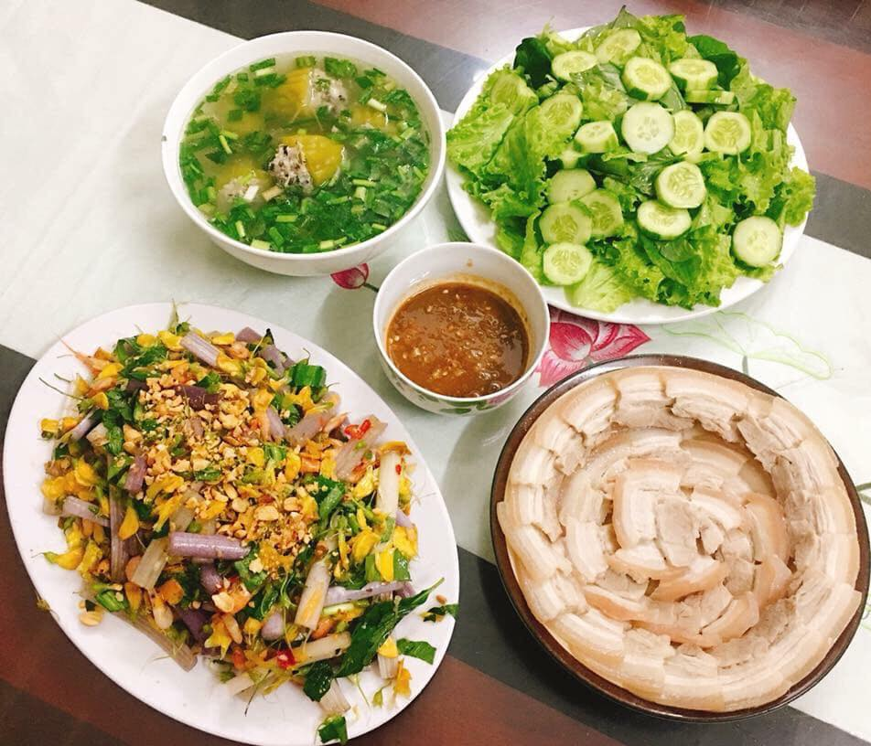

|
Tình yêu là gì? Là ta yêu một người mỗi ngày trong một năm. Mỗi năm trong đó một đời người ... |
|  | Nói đến hạnh phúc gia đình chúng ta thường mô tả bằng những từ thật đẹp đẽ và được thể hiện qua những giá trị đạo đức rất đáng trân trọng như tình yêu, lòng chung thủy, tình nghĩa vợ chồng, lòng yêu thương, hy sinh cho con cái, sự quý trọng, hiếu để của con cháu với ông bà, cha mẹ... |